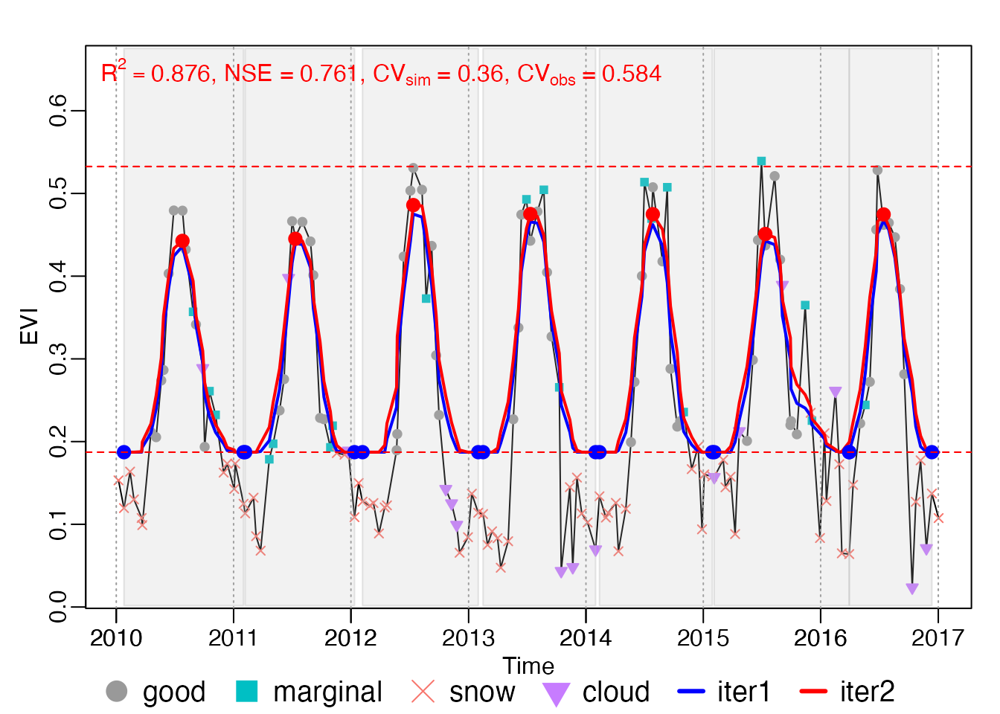
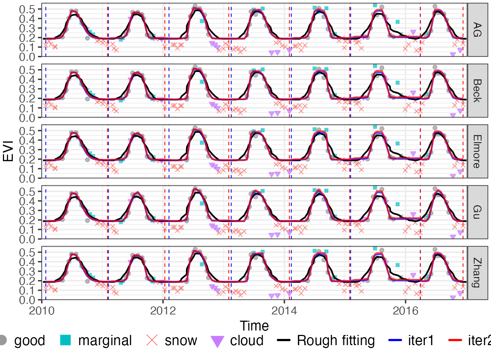
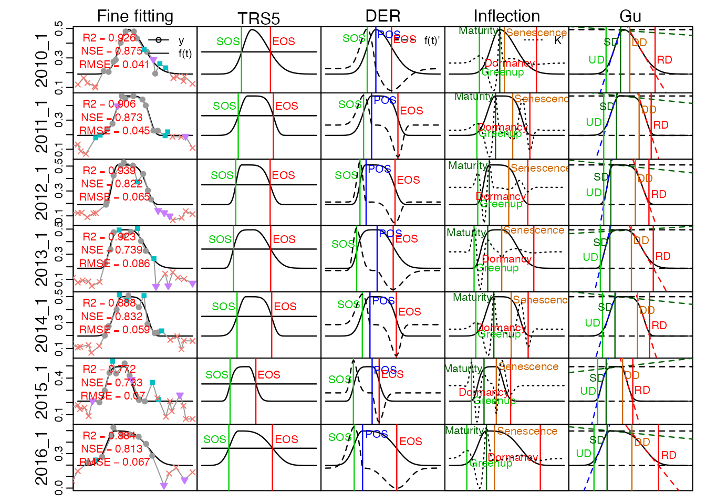

d = MOD13A1$dt %>% subset(site == "CA-NS6" & date >= "2010-01-01" & date <= "2016-12-31") %>%
.[, .(date, y = EVI/1e4, DayOfYear, QC = SummaryQA)]
d %<>% mutate(t = getRealDate(date, DayOfYear)) %>%
cbind(d[, as.list(qc_summary(QC, wmin = 0.2, wmid = 0.5, wmax = 0.8))]) %>%
.[, .(date, t, y, QC_flag, w)]
print(d)
#> date t y QC_flag w
#> 1: 2010-01-01 2010-01-08 0.1531 snow 0.2
#> 2: 2010-01-17 2010-01-25 0.1196 snow 0.2
#> 3: 2010-02-02 2010-02-13 0.1637 snow 0.2
#> 4: 2010-02-18 2010-02-25 0.1301 snow 0.2
#> 5: 2010-03-06 2010-03-21 0.1076 snow 0.2
#> ---
#> 157: 2016-10-15 2016-10-23 0.1272 snow 0.2
#> 158: 2016-10-31 2016-11-07 0.1773 snow 0.2
#> 159: 2016-11-16 2016-11-25 0.0711 cloud 0.2
#> 160: 2016-12-02 2016-12-12 0.1372 snow 0.2
#> 161: 2016-12-18 2017-01-02 0.1075 snow 0.2date: image date t : composite date
QC_flag and date are optional.
lambda <- 8
nptperyear <- 23
minExtendMonth <- 0.5
maxExtendMonth <- 1
minPercValid <- 0
wFUN <- wTSM # wBisquare
wmin <- 0.2
methods_fine <- c("AG", "Zhang", "Beck", "Elmore", "Gu")Simply treating calendar year as a complete growing season will induce a considerable error for phenology extraction. A simple growing season dividing method was proposed in phenofit.
The growing season dividing method rely on heavily in Whittaker smoother.
Procedures of initial weight, growing season dividing, curve fitting, and phenology extraction are conducted separately.
INPUT <- check_input(d$t, d$y, d$w,
QC_flag = d$QC_flag,
nptperyear = nptperyear,
maxgap = nptperyear / 4, wmin = 0.2
)
brks <- season_mov(INPUT,
list(FUN = smooth_wWHIT, wFUN = wFUN,
maxExtendMonth = 3,
wmin = wmin, r_min = 0.1
))
# plot_season(INPUT, brks)
## 2.4 Curve fitting
fit <- curvefits(INPUT, brks,
list(
methods = methods_fine, # ,"klos",, 'Gu'
wFUN = wFUN,
iters = 2,
wmin = wmin,
# constrain = FALSE,
nextend = 2,
maxExtendMonth = maxExtendMonth, minExtendMonth = minExtendMonth,
minPercValid = minPercValid
))
#> [curvefits] running 1 ...
#> [curvefits] running 2 ...
#> [curvefits] running 3 ...
#> [curvefits] running 4 ...
#> [curvefits] running 5 ...
#> [curvefits] running 6 ...
#> [curvefits] running 7 ...
## check the curve fitting parameters
l_param <- get_param(fit)
print(l_param$Beck)
#> # A tibble: 7 × 7
#> flag mn mx sos rsp eos rau
#> <chr> <dbl> <dbl> <dbl> <dbl> <dbl> <dbl>
#> 1 2010_1 0.191 0.538 3808. 0.0824 3893. 0.0440
#> 2 2011_1 0.193 0.477 4180. 0.112 4275. 0.111
#> 3 2012_1 0.187 0.510 4542. 0.193 4643. 0.0970
#> 4 2013_1 0.193 0.492 4904. 0.235 5009. 0.0746
#> 5 2014_1 0.196 0.495 5275. 0.120 5375. 0.239
#> 6 2015_1 0.212 0.494 5639. 0.143 5725. 0.183
#> 7 2016_1 0.198 0.499 6002. 0.190 6095. 0.0781
dfit <- get_fitting(fit)
print(dfit)
#> flag t y QC_flag meth ziter1 ziter2
#> 1: 2010_1 2010-02-13 0.1637 snow AG 0.1888952 0.1904816
#> 2: 2010_1 2010-02-13 0.1637 snow Zhang 0.1882279 0.1896877
#> 3: 2010_1 2010-02-13 0.1637 snow Beck 0.1889462 0.1907506
#> 4: 2010_1 2010-02-13 0.1637 snow Elmore 0.1881396 0.1905156
#> 5: 2010_1 2010-02-13 0.1637 snow Gu 0.1877073 0.1883330
#> ---
#> 741: 2016_1 2016-11-25 0.0711 cloud AG 0.1931919 0.1960628
#> 742: 2016_1 2016-11-25 0.0711 cloud Zhang 0.1939346 0.1984970
#> 743: 2016_1 2016-11-25 0.0711 cloud Beck 0.1939838 0.1986943
#> 744: 2016_1 2016-11-25 0.0711 cloud Elmore 0.1940210 0.1987223
#> 745: 2016_1 2016-11-25 0.0711 cloud Gu 0.1872110 0.1872110
## 2.5 Extract phenology
TRS <- c(0.1, 0.2, 0.5)
l_pheno <- get_pheno(fit, TRS = TRS, IsPlot = FALSE) # %>% map(~melt_list(., "meth"))
print(l_pheno$doy$Beck)
#> flag origin TRS1.sos TRS1.eos TRS2.sos TRS2.eos TRS5.sos TRS5.eos
#> 1: 2010_1 2010-01-01 126 298 138 278 154 248
#> 2: 2011_1 2011-01-01 142 279 151 271 163 257
#> 3: 2012_1 2012-01-01 148 285 152 276 160 261
#> 4: 2013_1 2013-01-01 146 292 150 280 156 261
#> 5: 2014_1 2014-01-01 143 272 151 268 163 263
#> 6: 2015_1 2015-01-01 144 260 151 254 161 246
#> 7: 2016_1 2016-01-01 147 282 151 271 159 253
#> DER.sos DER.pos DER.eos UD SD DD RD Greenup Maturity Senescence Dormancy
#> 1: 156 192 242 132 175 211 287 128 184 212 294
#> 2: 163 210 258 145 181 240 276 141 185 236 280
#> 3: 160 196 261 149 170 241 282 145 175 236 286
#> 4: 156 185 261 147 164 237 288 142 169 229 292
#> 5: 162 227 262 146 179 252 274 142 183 249 276
#> 6: 161 208 247 147 175 235 259 143 179 231 262
#> 7: 159 190 252 149 169 229 279 144 174 223 282
pheno <- l_pheno$doy %>% melt_list("meth")
# growing season dividing
plot_season(INPUT, brks, ylab = "EVI")
# Ipaper::write_fig({ }, "Figure4_seasons.pdf", 9, 4)
# fine curvefitting
g <- plot_curvefits(dfit, brks, title = NULL, cex = 1.5, ylab = "EVI", angle = 0)
grid::grid.newpage()
grid::grid.draw(g)
# Ipaper::write_fig(g, "Figure5_curvefitting.pdf", 8, 6, show = TRUE)
# extract phenology metrics, only the first 3 year showed at here
# write_fig({
l_pheno <- get_pheno(fit[1:7], method = "AG", TRS = TRS, IsPlot = TRUE, show_title = FALSE)
# }, "Figure6_phenology_metrics.pdf", 8, 6, show = TRUE)TIMESAT and phenopix
# library(ggplot2)
# library(ggnewscale)
# # on the top of `Figure7_predata...`
# d_comp = fread("data-raw/dat_Figure7_comparison_with_others-CA-NS6.csv")
# d_comp = merge(d[, .(date, t)], d_comp[, .(date, TIMESAT, phenopix)]) %>%
# merge(dfit[meth == "Beck", .(t, phenofit = ziter2)], by = "t") %>%
# melt(c("date", "t"), variable.name = "meth")
# labels = c("good", "marginal", "snow", "cloud")
# theme_set(theme_grey(base_size = 16))
# cols_line = c(phenofit = "red", TIMESAT = "blue", phenopix = "black")
# p <- ggplot(dfit, aes(t, y)) +
# geom_point(aes(color = QC_flag, fill = QC_flag, shape = QC_flag), size = 3) +
# scale_shape_manual(values = qc_shapes[labels], guide = guide_legend(order = 1)) +
# scale_color_manual(values = qc_colors[labels], guide = guide_legend(order = 1)) +
# scale_fill_manual(values = qc_colors[labels], guide = guide_legend(order = 1)) +
# new_scale_color() +
# geom_line(data = d_comp, aes(t, value, color = meth)) +
# # geom_line(data = d_comp[meth == "phenofit"], aes(t, value),
# # size = 1, show.legend = FALSE, color = "red") +
# scale_color_manual(values = cols_line, guide = guide_legend(order = 2)) +
# labs(x = "Time", y = "EVI") +
# theme(
# axis.title.x = element_text(margin = margin(t = 0, unit='cm')),
# # plot.margin = margin(t = 0, unit='cm'),
# legend.text = element_text(size = 13),
# legend.position = "bottom",
# legend.title = element_blank(),
# legend.margin = margin(t = -0.3, unit='cm'))
# p
# # write_fig(p, "Figure7_comparison_with_others.pdf", 10, 4, show = TRUE)